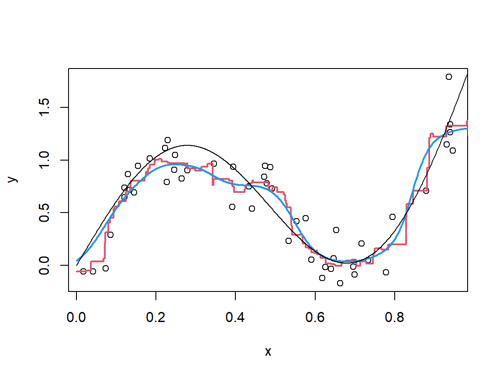
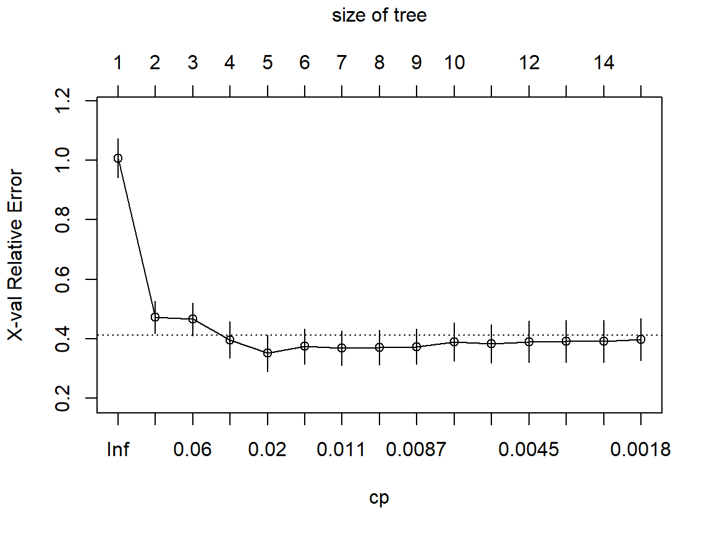
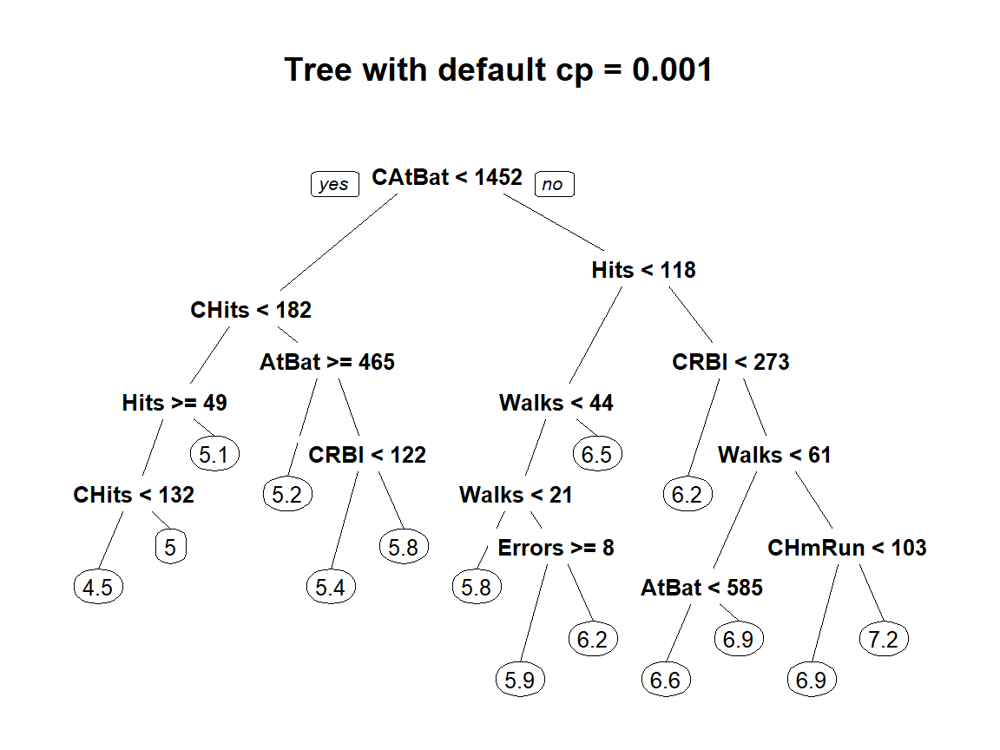

9 Nonlinearity Part II
\[ \def\R{\mathcal{R}} \def\x{\mathbf{x}} \def\hg{\hat g} \def\w{\mathbf{w}} \]
So far in all the models we have investigated there has been (at least implicitly) some parameterised structure. In the (generalised) linear models the regression, coefficients and the distribution family and link function used to model the response fully characterised the model(s). When we looked at basis expansions, even when we applied the kernel trick to bypass many of the calculations, within the feature space there was still the implicit setting of a set of optimal coefficients for the basis functions.
In this chapter we look at an alternative way of fitting models using what is known as nonparametric smoothing. We then go on to look at a very important group of models known as Decision Trees (DTs), which may be seen as combining the optimisation approach used in parametric models with the local averaging approach of nonparametric smoothing. DTs are highly nonlinear models yet despite this they can be highly interpretable. In addition DTs are by far the most popular models used within ensemble predictive models, which we cover in the next chapter.
9.1 Smoothing as Local Averaging
The appropriateness of estimating a function for prediction using a “local average” is most intuitively communicated from the point of view of regression. Recall that in the standard regression setting we have \[ Y = g^*(X) + \epsilon, \] where the residual, \(\epsilon\), has mean zero. Let’s also assume that the function \(g^*\) is “nicely behaved” in that there is a constant \(L\) for which, given any two values \(\x_1, \x_2\) in the domain of \(g^*\), we have \(|g^*(\x_1)-g^*(\x_2)| \leq L d(\x_1, \x_2)\) where \(d(\x_1,\x_2) = \sqrt{(\x_1-\x_2)^\top (\x_1-\x_2)}\). The quantity \(d(\x_1, \x_2) = \sqrt{(\x_1-\x_2)^\top (\x_1-\x_2)}\) may be seen as the distance between \(\x_1\) and \(\x_2\) and so this condition ultimately says that the gradient of \(g^*\) cannot exceed \(L\). A function with this condition is called Lipschitz continuous with Lipschitz constant \(L\) (but we don’t need to know what it’s called for this module).
Now let’s suppose that we are interested in estimating \(g^*\) at a particular value for \(X\), say \(\x\). Then let’s suppose we look inside our data set and find all the observations \((y_i, \x_i)\) for which \(d(\x, \x_i)\) is less than some value \(h\). We could then define our estimate for \(g^*(\x)\) as the average value of the associated \(y_i\)’s. That is, if \(n_{\x,h}\) is the number of sample points within a distance \(h\) from \(\x\) then we have \[ \hg(\x):= \frac{1}{n_{\x,h}}\sum_{i:d(\x_i, \x)<h} y_i. \]
Why might this be a sensible thing to do? Let’s start by looking at its mean and variance, and we will assume for simplicity that the sample is fixed and we’re looking at the conditional mean and variance, sort of like we did when looking at the theory for the linear model. If we revert to the random sample situation we would have
\[\begin{align*} E[\hg(\x)] &= \frac{1}{n_{\x,h}}\sum_{i:d(\x_i,\x)<h} E[Y_i]\\ &= \frac{1}{n_{\x,h}}\sum_{i:d(\x_i,\x)<h}E[Y|X=\x_i]\\ &= \frac{1}{n_{\x,h}}\sum_{i:d(\x_i,\x)<h} g^*(\x_i). \end{align*}\] But note that this average only includes the function values \(g^*(\x_i)\) for those \(\x_i\) which are close to \(\x\), and we are assuming that the function doesn’t change dramatically over any small ranges. In particular we have “filtered” our sample so that among those \(\x_i\) included in the above average we know \(|g^*(\x_i)-g^*(\x)| < hL\). This tells us immediately that the absolute value of the bias of \(\hg(\x_i)\) is no greater than \(hL\) (in fact typically in practice it will be considerably smaller than this).
We also have, since each of the sample points is assumed to be independent, that \[\begin{align*} Var(\hg(\x)) &= \frac{1}{n_{\x,h}^2}\sum_{i:d(\x_i,\x)<h} Var(Y_i)\\ &= \frac{\sigma_{\epsilon}^2}{n_{\x,h}}. \end{align*}\]
As always there is a tension between these two quantities. In order to decrease the variance we need to increase \(n_{\x, h}\). In order to do this we need to increase \(h\) so that more points will be within a distance \(h\) from \(\x\). This means we increase the bias since we need to look “further away”, and the function value may change more from \(g^*(\x)\) (our target) if we include in our average values \(g^*(\x_i)\) where \(d(\x, \x_i)\) is larger.
Let’s quickly look at a small example to see what’s going on. The following will simulate \(n=50\) observations where \(X\) is uniformly distributed in \((0, 1)\) and \(Y = \sin(2\pi X) +2X^2 +\epsilon\). We will use a setting of \(h = 0.05\) to see the effects on estimation of \(g^*(X) = \sin(2\pi X) + 2X^*2\).
### Set up constants
n <- 50
h <- 0.05
sigma_resids <- 1/5
x_grid <- seq(0, 1, length = 1000) # values at which we will estimate the function
g <- function(x) sin(2*pi*x) + 2*x^2
### Simulate observations
x <- runif(n)
y <- g(x) + rnorm(n, sd = sigma_resids)
### The object dmat contains zeroes and ones, with a one in row i column j
### if the i-th element in x_grid is within a distance h from the j-th
### observation of x
dmat <- 1*(abs(x_grid%*%t(rep(1, n))-rep(1, length(x_grid))%*%t(x)) < h)
### See if you can understand why the evaluation of yhat has the correct form
### What does dmat%*%y evaluate to?
yhat <- (dmat%*%y)/rowSums(dmat)
### Now we plot the observations and the estimated function, as well as the true function
plot(x, y)
lines(x_grid, yhat, col = 2, lwd = 2) # fitted function
lines(x_grid, g(x_grid)) # true function
Run the above code multiple times. Change some of the settings, e.g. n and h, and see what happens to the fitted function.
The fitted values using this simple smoothing technique behaves fairly erratically, but nonetheless is capable of fitting
reasonably well to the data. However the “filtering” idea of including only those observations within a distance h from each
point where we want to evaluate the function leads to a “blocky” appearance. We also face the difficulty of how to define \(\hg\) if there are no points within a distance \(h\) from \(\x\). More generally we can modify this estimation strategy using a weight function \(\w(\x) = (w_1(\x), w_2(\x), ..., w_n(\x))^\top\) which takes an input \(\x\), and returns a vector of non-negative weights which determine the “similarity” between \(\x\) and each of the observations. In the above example our weight function just had zeroes in the positions where the distance from \(\x\) to an observation was greater than \(h\) and ones elsewhere. But we could instead use a smooth weight function which gives larger weights to observations close to \(\x\) but more gradually decreases to zero for points further away. In the following we modify the dmat object to instead use a weight function with \(i\)-th entry \(\exp(-(\x-\x_i)^2/2h^2)\), the Gaussian kernel:
### The "smoother" dmat
dmat <- exp(-(x_grid%*%t(rep(1, n))-rep(1, length(x_grid))%*%t(x))^2/2/h^2)
### Evaluating the fitted function uses the same idea. It is a weighted average of the
### observations of the response, placing more weight on those from points nearby
yhat_new <- (dmat%*%y)/rowSums(dmat)
### Now we plot the observations and the estimated function, as well as the true function
plot(x, y)
lines(x_grid, yhat, col = 2, lwd = 2) # old fitted function
lines(x_grid, yhat_new, col = 4, lwd = 2)
lines(x_grid, g(x_grid)) # true function
The red line (initial estimate) and the blue line (using the Gaussian kernel) follow very similar trajectories, but the blue line is smoother. It also has the property that there will always be non-zero weights and so even if there are no points within a distance \(h\) from one of the evaluation points, there is no lack of definition.
The “tuning parameter” \(h\), also called the bandwidth, is in a more general sense known as the smoothing parameter. Larger values of the smoothing parameter lead to overall smoother (less wiggly/erratic) fits, but at the expense of more bias. Choosing an appropriate smoothing parameter can be very challenging. Although in this simple univariate example we could get quite nice looking fits to the data with relatively little effort, the problem becomes far more difficult in multivariate settings (with multiple covariates) and when the sample becomes larger (for the resulting computational cost).
9.2 Nearest Neighbours
The kernel smoothing described above is highly principled, but there are numerous challenges associated with the approach. As mentioned choosing the bandwidth parameter \(h\) is crucial to obtaining a good estimate, and because the computational cost of fitting kernel smoothing models is relatively high, performing cross validation may not be feasible. It may also be that a single value for \(h\) doesn’t allow for a good fit over the whole function, especially when the density of observations is not uniform in \(X\).
Nearest neighbours based estimators are arguably the most popular in the class of simple nonparametric smoothers. They are able to overcome some of the limitations of kernel smoothers: (i) they are practically much more computationally efficient, especially in dimensions between 2 and about 20 and (ii) they have an effectively adaptive smoothing effect, which varies depending on the density of the observations of \(X\).
The weight function used in “\(k\) Nearest Neighbours” (\(k\)NN) simply has a one in the positions of the \(k\) nearest points to \(\x\), and zero elsewhere. This non-smooth weight function also results in a “blocky” appearance, like the initial smoothing estimator described above, but has the property that where the observations of \(X\) are more dense, i.e. where there is more more information from the sample, the distance between \(\x\) and the observations with non-zero weights will be smaller. Conversely where the observations of \(X\) are more sparse and there is less information, the \(k\)NN estimator will “reach further” for its neighbour points to account for this lack of information. The result is that the variance of the estimator is the same (\(\sigma^2_\epsilon/k\)) over the whole domain.
There are multiple implementations of \(k\)NN in R, and we will simply use the method linked to by the caret package.
### Load the library
library(caret)
### Fit the model
knn_model <- train(y~x, data = data.frame(x, y), method = "knn",
trControl = trainControl("none"), tuneGrid = expand.grid(k=5))
plot(x, y)
lines(x_grid, predict(knn_model, data.frame(x = x_grid)), col = 2, lwd = 2)
lines(x_grid, g(x_grid))9.2.1 Classification with \(k\)NN
The same ideas of local estimation are used when performing classification as regression, however unlike in a regression context we cannot simply take the average of the responses when they represent class labels
- If we had a problem where our classes were encoded \(\{cat = 1, dog = 2, goat = 3\}\) we shouldn’t be thinking that the average of a cat and a goat is a dog (\((1+3)/2 = 2\)).
Instead what we can do is compute the class proportions among the neighbours of an evaluation point \(\x\). That is, suppose \(\{\x_{(1)}, ..., \x_{(k)}\}\) are the \(k\) nearest sample observations of \(X\) to the reference point \(\x\). We then compute the proportions of \(\{y_{(1)}, ..., y_{(k)}\}\) which fall in each class. A final classification can then be achieved by taking the class with the highest proportion, or, as we described in Chapter 7, depending on the relative importance of some misclassifications over others we may wish to adjust the thresholds for classification depending on the problem context.
Categorical Covariates and Scaling
Nonparametric smoothing techniques rely on distances between observations, where typical distance metrics require only numerical data. Although there are some distance functions which can combine numeric and categorical variables a straightforward approach is to use dummy variables as we described in Chapter 4. Since the \(k\)NN model linked to in caret does not automatically handle this for us we need to explicitly do so.
In addition, if variables are captured on extremely varying scales then those with larger scale will dominate the distances between points. In order to combat this it is preferable to scale the covariates when using purely distance based approaches.
9.2.2 Tuning \(k\)NN models in R
As may have been very apparent already, we can tune/perform model selection for \(k\)NN models using the train function in caret. We will perform classification on the SAheart data set, which can be downloaded from <“https://hastie.su.domains/ElemStatLearn/datasets/SAheart.data”> directly from within R using the readr package.
### Load the libraries needed and then load the data
library(readr)
library(caret)
SAheart <- read_csv("https://hastie.su.domains/ElemStatLearn/datasets/SAheart.data",
show_col_types = FALSE)[,-1] # remove first column as this is just a row index
### In order for train to perform classification we need to ensure
### the response is a factor variable. In addition, caret (as well
### as some other packages) do not like for us to use numeric values
### for the class labels/names.
### Also recall that caret treats the reference class differently
### from some other packages/functions. Specifically the outcome
### of interest and not the baseline must be set to the reference class
### otherwise we may have the sensitivity and specificity muddled
### As always, as long as you as the practicioner are aware how to
### interpret the results then it doesn't matter how R actually
### treats them
y <- relevel(factor(SAheart$chd, levels = c(0, 1), labels = c("Neg", "Pos")),
ref = "Pos")
### The data contains one categorical variable (famhist) which has
### not already been converted to numeric. Note that sometimes
### data sets will have their categorical variables encoded with
### integers and it is important wherever possible to investigate
### what the variables actually represent to determine if any conversion is needed.
### In this instance all other categorical variables are binary and so it is not
### important.
### We can use the dummyVars function to encode our data using predict
### Remember not to include the response variable!
X <- predict(dummyVars(~., data = SAheart[,names(SAheart)!="chd"]),
newdata = SAheart[,names(SAheart)!="chd"])
### Now we can split our data into training and test splits and then perform
### cross validation for selection.
train_ix <- createDataPartition(y, p = 0.7, list = FALSE)
X.tr <- X[train_ix,]
y.tr <- y[train_ix]
X.te <- X[-train_ix,]
y.te <- y[-train_ix]
### Let's consider a number of neighbours from 1 to 20
tune_grid <- expand.grid(k = 1:20)
### We will perform ten fold cross validation
trControl <- trainControl(method = "cv", number = 10)
### As we described in a previous chapter all preprocessing should ideally be
### done within each train/validation step in cross validation, and this can
### be achieved with the argument preProcess.
knn_model <- train(y~., data = data.frame(X.tr, y=y.tr), method = "knn",
tuneGrid = tune_grid, trControl = trControl,
preProcess = "scale")
knn_model$results## k Accuracy Kappa AccuracySD KappaSD
## 1 1 0.6827652 0.2764486 0.10603054 0.22428099
## 2 2 0.6517992 0.2079168 0.08366989 0.18460220
## 3 3 0.6789773 0.2576122 0.05074517 0.11350130
## 4 4 0.6790720 0.2523038 0.02486464 0.07743035
## 5 5 0.6697917 0.1995049 0.04701704 0.12831657
## 6 6 0.6482955 0.1495437 0.07562225 0.16945244
## 7 7 0.7037879 0.2618657 0.05226342 0.15755397
## 8 8 0.7007576 0.2574582 0.04908434 0.14293743
## 9 9 0.6913826 0.2196349 0.04579403 0.12765890
## 10 10 0.7005682 0.2449109 0.06403364 0.16807632
## 11 11 0.7005682 0.2414756 0.05326427 0.14619089
## 12 12 0.7284091 0.3142221 0.05019793 0.14704077
## 13 13 0.7129735 0.2683626 0.05466503 0.16919763
## 14 14 0.6972538 0.2230234 0.05155948 0.16486612
## 15 15 0.7067235 0.2428096 0.04218488 0.14001602
## 16 16 0.7191288 0.2792015 0.04698980 0.15496133
## 17 17 0.7159091 0.2799539 0.04179083 0.12809442
## 18 18 0.7160038 0.2830170 0.05451902 0.15265600
## 19 19 0.7126894 0.2644026 0.03515626 0.10902599
## 20 20 0.7221591 0.2950399 0.02957148 0.09281690We can now inspect the performance of the model on the test data using the statistics from the confusion matrix
## Confusion Matrix and Statistics
##
## Reference
## Prediction Pos Neg
## Pos 19 9
## Neg 29 81
##
## Accuracy : 0.7246
## 95% CI : (0.6422, 0.7972)
## No Information Rate : 0.6522
## P-Value [Acc > NIR] : 0.042891
##
## Kappa : 0.3277
##
## Mcnemar's Test P-Value : 0.002055
##
## Sensitivity : 0.3958
## Specificity : 0.9000
## Pos Pred Value : 0.6786
## Neg Pred Value : 0.7364
## Prevalence : 0.3478
## Detection Rate : 0.1377
## Detection Prevalence : 0.2029
## Balanced Accuracy : 0.6479
##
## 'Positive' Class : Pos
## As is often the case with imblanced data where the outcome of interest is less prevalent than the baseline, the sensitivity is quite low. When fitting \(k\)NN models using case weights and/or upsampling the minority class is less effective than it is in models based on optimisation. In such cases one can consider changing the threshold for classification or using a different criterion for selecting a model. The latter can be achieved by designing ones own summaryFunction.
9.3 Decision Trees
Decision trees also use the idea of a “local average” in order to fit predictive models, however instead of using a fixed “smoothing parameter” (like the \(k\) in \(k\)NN), they split up the input space into non-overlapping regions in a semi-optimal way; using the training data in order to choose how the splits are determined. They then use the averages from the training data in each of these regions in order to make predictions.
- It is certainly possible to have more complex models within each of the regions than just choosing the average value, but this is beyond the scope of the course
The reason the models are referred to as decision trees, is that the partitioning of the covariate (input) space can be described in relation to a tree in the graph theory sense (don’t worry, you don’t have to know anything about graph theory). We can also think of them as trees in that, starting from a “root” node, observations are subjected to a rule/decision which results in a “branching” (splitting the observations based on the outcome of the rule/decision), after which the observations face another rule/decision which leads to further “branching”, and a further division of the input space, etc.
The following figure (taken from Introduction to Statistical Learning, James et al.) shows (left) a division of the two-dimensional space in \(X_1\) and \(X_2\) into five non-overlapping rectangular regions; (middle) a pictoral representation of the decisions/rules which lead to this partition (like an upside-down tree, with the root node at the top and the branches heading downwards); (right) the corresponding fitted function where the vertical direction shows the values the function assumes in each of the five regions.
- If you choose a pair of values for \(X_1\) and \(X_2\) and then apply the rules in the tree in the middle figure above (starting from the top), following the left “branch” if the result of applying the rule is true and the right “branch” if it is false, until you reach one of the terminal nodes (called leaves), you will see that the tree representation agrees with the “flat” representation of the different regions in the left figure.
Notice that the rectangular regions into which a decision tree partitions the input space have their sides parallel with the variable axes. The reasons for this, as opposed to allowing diagonal splits, are (i) it is much more computationally efficient to fit trees in this way even if it may not lead to as good a fit to the data and (ii) the interpretation of the outputs of decision trees is made far simpler when each of the decisions/rules is based only on one of the variables.
9.3.1 Fitting and Pruning Decision Trees
As mentioned previously decision trees are fit in a semi-optimal manner. What this means is that the pairs of variables and split points which determine the different regions, are chosen in order to minimise a loss function. However the final fitted model is very far from guaranteed to contain the best possible splitting of the input space even if we are restricted to axis-parallel rectangles. The reason for this is that the Classification And Regression Trees (CART) algorithm uses a greedy optimisation approach in which the rules in the tree are determined sequentially, and once a rule/split is added it cannot be removed. That is, first the pair of covariate and split point for the root node is chosen, and then it is kept fixed as the next splits are chosen, which are then fixed, and the next are chosen, etc.
Let’s suppose we have the regions in a tree denoted as \(\R_1, ..., \R_R\), and for any potential vector of covariates, \(\x\), let’s write \(\R(\x)\) to be the region into which \(\x\) falls. Since there is a single fixed value predicted in each region (determined from the averages of the responses from the points falling in these regions), we can write the training error as \[ \frac{1}{n}\sum_{i=1}^n L(y_i, \hat y_{\R(\x_i)}), \] where \(\hat y_{\R}\) is the fitted value in region \(\R\). But since \(\hat y_{\R(\x)}\) is the same for all \(\x \in \R\) we can also write this as
\[ \frac{1}{n}\sum_{r=1}^R \sum_{i:\x_i \in \R_r} L(y_i, \hat y_{\R_r}). \] In other words the training error can be split into the errors/losses from each of the regions/leaf nodes in the tree. The total loss from a leaf node is often referred to as the impurity of the node. When choosing which split to add next during the sequential fitting of a tree, then, one just needs to find the region whose impurity can be improved the most by splitting it into two new regions.
It should be clear that as more and more splits/regions are added to a tree, the resulting model will be able to fit better and better to the training data. Indeed if eventually every single point is in its own leaf node, then the training error will be zero. However, we know that fitting too well to the training data will very likely lead to overfitting and poor generalisation performance. The simplest approach for limiting the complexity of a decision tree is simply to terminate the sequential splitting either when a maximum number of leaf nodes is reached, or the depth (the maximum number of rules/splits taken from the root node to any leaf node) reaches some chosen maximum. Given our understanding of how regularisation can be used to fit models with good generalisation, an alternative is to use a penalised objective function \[ \frac{1}{n}\sum_{r=1}^R \sum_{i:\x_i \in \R_r} L(y_i, \hat y_{\R_r}) + \lambda R. \] In the above \(R\) is simply the number of splits/leaves/regions, and the penalty for increasing the complexity of the tree by adding an additional split is fixed equal to \(\lambda\). That is, there is no fixed maximum number of regions, and new regions can be added provided they improve the fit (i.e. reduce the training error) by at least \(\lambda\).
But here we reach a potential problem which comes about as a result of the semi-optimal manner in which trees are fit. What if by adding a “not-so-great” split fairly high up in the tree one is able to find a subsequent split which massively improves the overall fit? It is certainly possible that the high quality second split is not possible until the “not-so-great” split is added. A way around this is known as pruning. First a very deep/complex tree is fit, and then some of the branches are “pruned away” leaving a simpler tree in its place which gives a better penalised objective value. In this way it is possible to add the combination of a “not-so-great” split followed by a fantastic split instead of two mediocre splits (and, of course, more complex combinations of splits of varying quality).
In the context of what is known as cost-complexity pruning the penalty parameter \(\lambda\) is often referred to as the complexity parameter, and this can simply be chosen using our ubiquitous cross validation.
9.3.1.1 Regression Trees
Describing regression trees, given the above and what we already know about the standard regression problem, is relatively straightforward. As before a natural loss function to use when fitting regression trees is the squared error loss function, and we also learned when looking at likelihood based estimation in generalised linear models that minimising the squared error is equivalent to maximum likelihood when the response is normally distributed, i.e. when \(Y = g^*(X) + \epsilon\) where \(\epsilon \sim N(0, \sigma_{\epsilon}^2)\).
- The squared error loss function is also computationally preferred in the context of decision trees since when scanning over the potential splits along one of the covariate axes calculation of the total loss can be done recursively.
Regression Trees in R
The caret package can be used to fit (and tune) decision trees, however we will also be making use of the rpart package. We will also use the package rpart.plot which provides nice visualisations of fitted decision trees.
Let’s fit a regression tree which models the salaries of baseball players based on various career statistics, using the Hitters data set in the ISLR2 package.
### Start by loading the libraries we need
library(ISLR2)
library(rpart)
### Let's quickly inspect
str(Hitters)## 'data.frame': 322 obs. of 20 variables:
## $ AtBat : int 293 315 479 496 321 594 185 298 323 401 ...
## $ Hits : int 66 81 130 141 87 169 37 73 81 92 ...
## $ HmRun : int 1 7 18 20 10 4 1 0 6 17 ...
## $ Runs : int 30 24 66 65 39 74 23 24 26 49 ...
## $ RBI : int 29 38 72 78 42 51 8 24 32 66 ...
## $ Walks : int 14 39 76 37 30 35 21 7 8 65 ...
## $ Years : int 1 14 3 11 2 11 2 3 2 13 ...
## $ CAtBat : int 293 3449 1624 5628 396 4408 214 509 341 5206 ...
## $ CHits : int 66 835 457 1575 101 1133 42 108 86 1332 ...
## $ CHmRun : int 1 69 63 225 12 19 1 0 6 253 ...
## $ CRuns : int 30 321 224 828 48 501 30 41 32 784 ...
## $ CRBI : int 29 414 266 838 46 336 9 37 34 890 ...
## $ CWalks : int 14 375 263 354 33 194 24 12 8 866 ...
## $ League : Factor w/ 2 levels "A","N": 1 2 1 2 2 1 2 1 2 1 ...
## $ Division : Factor w/ 2 levels "E","W": 1 2 2 1 1 2 1 2 2 1 ...
## $ PutOuts : int 446 632 880 200 805 282 76 121 143 0 ...
## $ Assists : int 33 43 82 11 40 421 127 283 290 0 ...
## $ Errors : int 20 10 14 3 4 25 7 9 19 0 ...
## $ Salary : num NA 475 480 500 91.5 750 70 100 75 1100 ...
## $ NewLeague: Factor w/ 2 levels "A","N": 1 2 1 2 2 1 1 1 2 1 ...Similar to the function train in caret the rpart function uses a “control” object which tells it how to perform fitting and pruning. For starters we will simply use a fixed complexity parameter (cp) and set the minimum number of observations allowed in any terminal node (minbucket).
### Set up the control object
contr <- rpart.control(minbucket = 10, cp = 0.001)
### Now we can fit our model, setting the seed to ensure
### reproducibility
### We will regress the log salary since the raw salary
### values are very heavily skewed
set.seed(123)
tree_model <- rpart(log(Salary)~., data = Hitters, control = contr)By default when calling the rpart function cross validation is performed and the results for all complexity parameters greater than the value provided are stored. The cross validation results can be seen by using the function plotcp:

The presentation of the results is slightly different from what we see from caret, where with rpart the Relative Error is shown representing the estimated prediction error relative to the model with no splits (i.e. one which simply uses the average in the entire data set). The horizontal dotted line also indicates the “one standard error rule” threshold. All relevant information is stored in the field $cptable, where the column xerror is the cross validation estimate of relative error and rel error is the training relative error:
## CP nsplit rel error xerror xstd
## 1 0.568937909 0 1.0000000 1.0072170 0.06567495
## 2 0.061287729 1 0.4310621 0.4722220 0.05346809
## 3 0.057784443 2 0.3697744 0.4657209 0.05537989
## 4 0.030786188 3 0.3119899 0.3964910 0.06113039
## 5 0.013096781 4 0.2812037 0.3513748 0.06089676
## 6 0.011700767 5 0.2681069 0.3745273 0.05898447
## 7 0.010933909 6 0.2564062 0.3691529 0.05819627
## 8 0.009209713 7 0.2454723 0.3698248 0.05808903
## 9 0.008216401 8 0.2362626 0.3736554 0.05929000
## 10 0.005492546 9 0.2280462 0.3898444 0.06430554
## 11 0.005158254 10 0.2225536 0.3828877 0.06503018
## 12 0.003910817 11 0.2173954 0.3901558 0.06991258
## 13 0.003753955 12 0.2134845 0.3914650 0.06991046
## 14 0.003390561 13 0.2097306 0.3914650 0.06991046
## 15 0.001000000 14 0.2063400 0.3974447 0.07122065To extract a model for a different setting of cp after fitting a first tree with rpart one can use the function prune. For example, for the values of cp which minimise the estimated prediction error and using the 1 standard error rule
### Minimum cv error
ix_min <- which.min(tree_model$cptable[,'xerror'])
cp_min <- tree_model$cptable[ix_min,'CP']
pruned_tree_min <- prune(tree_model, cp = cp_min)
### One standard error rule
ix_1se <- min(which(tree_model$cptable[,'xerror'] <= tree_model$cptable[ix_min,'xerror'] +
tree_model$cptable[ix_min,'xstd']))
cp_1se <- tree_model$cptable[ix_1se,'CP']
pruned_tree_1se <- prune(tree_model, cp = cp_1se)Visualising and Interpreting Decision Trees
One of the reasons decision trees are favoured by practicioners is the fact that they can very clearly and intuitively be visualised, provided they are not very complex. Let’s investigate the trees we fit above to the Hitters data set using the prp function in the rpart.plot package.
### Load the package
library(rpart.plot)
### The two trees selected using cross validation
par(mfrow = c(1, 2))
prp(pruned_tree_min, main = "Tree selected by minimum CV error")
prp(pruned_tree_1se, main = "Tree selected by 1 SE rule")- It is hopefully not surprising that the model selected using the one standard error rule is simpler than the one which gave the lowest cross validation error estimate.
Both trees clearly indicate how the predictions from the two models come about. For example, in the left tree we can see that the key determining factors (as captured by this model) in achieving the highest predicted salary (bottom right leaf of the tree) is to have variable CAtBat (number of times batting in entire career) at least 1452, Hits (total number of hits in the year 1986) at least 118, and CRBI (total number of runs scored in career) at least 273. None of the other variables affects this particular prediction, but the number of career hits CHits is an important variable for prediction when CAtBat is less than 1452.
The fact that different variables become more/less important depening on splits higher up the tree mean that decision trees are extremely well suited to capturing complex interactions between covariates. However, as alluded to above, being able to interpret the outputs of a tree model relies on its not being too complex. If we consider the original tree we fit, we see something less appealing

Although with only 320 observations and a minimum node size of 10 one cannot ever reach extreme levels of complexity, already in this model interpretation becomes more challenging than in the pruned models.
9.3.1.2 Classification Trees
The main ideas in fitting and pruning decision trees, whether they are used for regression or for classification, are the same. However, whereas in fitting regression trees the common squared error loss if used, it is common when fitting classification trees to use either the Gini coefficient or the cross-entropy as the measure of impurity which implicitly defines the loss function.
- This is not to say that using a likelihood based loss function is inappropriate, but these measures of impurity generally perform better on multiclass classification problems.
Suppose that we have a total of \(K\) classes, and let \(\hat p_1, \hat p_2, ..., \hat p_K\) be the proportions of the observations in a given node from each of the classes. These values therefore define a probability distribution over the classes, and both the Gini coefficient and cross-entropy can be seen as measures of how much uncertainty there is in this distribution. If all of the observations are in a single class (say class \(k\)) then we would have \(\hat p_k = 1\) and \(\hat p_j = 0\) for \(j \not = k\). Such a distribution can be seen as having no uncertainty because all outcomes will be in class \(k\). On the other hand if all \(\hat p_k; k = 1, ..., K\) are equal then there is a maximum level of uncertainty since each outcome is equally likely.
Formally we have \[ Gini(\hat p_1, ..., \hat p_K) = \sum_{j=1}^K \hat p_j (1- \hat p_j), \] and \[ CrossEntropy(\hat p_1, ..., \hat p_K) = -\sum_{j=1}^K \hat p_j \log(\hat p_j), \] and we set \(0\log(0) = 0\). It should be pointed out, however, that these quantities are not directly dependent on the number of observations in the node and so to quantify the total impurity of a node the Gini coefficient/cross entropy is multiplied by the number of observations in the node.
Classification Trees in R
Within the rpart function we can minimise the Gini impurity by specifying parms = list(split = "gini") or the cross-entropy by specifying parms = list(split = "information"), where minimising cross-entropy is equivalent to maximising “information gain”.
Let’s revisit the satimage data set we saw with the multinomial regression model in Chapter 7.
### Loading library
library(pmlbr)
### The fetch_data function will download and load data sets by name
satimage <- fetch_data("satimage")## Download successful.### All data sets loaded using pmlbr have the response variable named "target"
table(satimage$target)##
## 1 2 3 4 5 7
## 1533 703 1358 626 707 1508Now let’s begin by splitting the data into training and test sets using caret’s createDataPartition function.
### We must ensure the response is a factor variable
satimage$target <- as.factor(satimage$target)
### Recall that createDataPartition requires the response variable
### and will split the data to approximately respect the class
### proportions
train_ix <- createDataPartition(satimage$target, p = 0.7, list = FALSE)
### We can now index the satimage data set to produce train and test sets
satimage.tr <- satimage[train_ix,]
satimage.te <- satimage[-train_ix,]
### Now let's set up the control object. As this is a much bigger data set then
### we had with the regression problem we include a larger minbucket
contr <- rpart.control(minbucket = 25, cp = 0.0001)
### Now we can fit our models, using both impurity measures
tree_gini <- rpart(target~., data = satimage.tr,
control = contr, parms = list(split = "gini"))
tree_info <- rpart(target~., data = satimage.tr,
control = contr, parms = list(split = "information"))
### In both cases the cross validation error continues to decrease with
### the depth of the tree. We can, however, compare the full models
### with one another as well as with the pruned trees based on the
### 1 standard error rule
par(mfrow = c(1, 2))
plotcp(tree_gini, main = "Gini Coefficient")
plotcp(tree_info, main = "Cross-Entropy")### For the tree fit with the Gini coefficient
ix_min <- which.min(tree_gini$cptable[,'xerror'])
ix_1se <- min(which(tree_gini$cptable[,'xerror'] <= tree_gini$cptable[ix_min,'xerror'] +
tree_gini$cptable[ix_min,'xstd']))
cp_1se <- tree_gini$cptable[ix_1se,'CP']
pruned_gini <- prune(tree_gini, cp = cp_1se)
### For the tree fit with the information gain/cross-entropy
ix_min <- which.min(tree_info$cptable[,'xerror'])
ix_1se <- min(which(tree_info$cptable[,'xerror'] <= tree_info$cptable[ix_min,'xerror'] +
tree_info$cptable[ix_min,'xstd']))
cp_1se <- tree_info$cptable[ix_1se,'CP']
pruned_info <- prune(tree_info, cp = cp_1se)
confusionMatrix(predict(tree_gini, satimage.te, type = "class"), satimage.te$target)$overall['Accuracy']## Accuracy
## 0.8323819confusionMatrix(predict(pruned_gini, satimage.te, type = "class"), satimage.te$target)$overall['Accuracy']## Accuracy
## 0.8354956confusionMatrix(predict(tree_info, satimage.te, type = "class"), satimage.te$target)$overall['Accuracy']## Accuracy
## 0.8417229confusionMatrix(predict(pruned_info, satimage.te, type = "class"), satimage.te$target)$overall['Accuracy']## Accuracy
## 0.83757149.3.2 Some further Comments on Decision Trees
Before we conclude we will briefly discuss a few more points which are relevant to decision trees.
Handling categorical variables with dummy variables can be cumbersome. Decision trees are able to get around this by splitting on categorical variables directly; simply separating all observations in one category from the rest and choosing which category to isolate based on the improvement in the fit.
Similar to how they handle categorical variables decision trees can also neatly handle missing values. How this is achieved is that whenever a variable is being screened for potential split points, at each split the tree can check whether placing all the
NA’s above/below the split gives the better fit. In this way the missing entries are actually informative rather than a nuisance.The discontinuous splitting of decision trees means they are extremely high variance estimators, even for a given level of bias. Even a few changes to observations on one of the covariates can completely change the structure of the tree if it “disrupts” one of the splits fairly high up. Although this is in general detrimental, as we see in the next chapter this is actually a beneficial thing when it comes to ensemble models.
9.4 Summary
Nonparametric smoothing is an alternative approach for fitting non-linear models
Unlike the basis expansion approach, which the covariates are transformed and then a linear model is fit to these transformations, nonparametric smoothing is based on the principle of a local average
The intuition is that if the function we are estimating is continuous then small changes in the values of the covariates should correspond with small changes in the value of the function
If we average the values of the response, but only after filtering the data to select the observations which are close to the point of interest (in terms of the values of the covariates), then there should not be much bias
If we choose to filter more strictly, only including those very near to the point of interest, then there should be less bias, but there will be fewer points which are being averaged, leading to higher variance
Decision trees are adaptive nonparametric smoothing models, since they “choose” how the filtering should be done based on an optimisation algorithm
Because the algortihm is “greedy” we typically will not find the globally optimal solution, the fit to the data will usually be better than the non-adaptive (or “lazy”) approach of something like \(k\) nearest neighbours
Decision trees also have the advantage of being fairly interpretable provided they are not overly complex. In addition since they are not based on distances like other nonparametric smoothing models, we do not have to concern ouselves with scaling of the covariates, and decision trees also noturally handle categorical covariates and missing data.